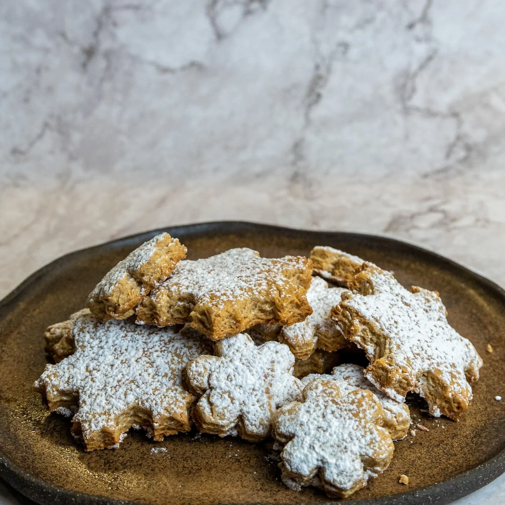

⏲ 25 minuts 👥 25 galetes

L'ultima recepta de l'any 2023 tracta d’una idea ideal per acabar de rematar les festes, unes galetes
de gingebre i canyella
d’aquelles tan addictives. Es tracta d’unes galetes més grosses i esponjoses que les que us poden
venir al cap quan penseu
amb unes galetes de gingebre. Veureu que us donarà grans resultats i rematareu les festes sorprenent
novament família i amics!
Ingredients:
- 600g de farina
- 150g de mantega
- 130g de sucre morè
- 2 ous
- 1 sobre de llevat
- 1 cullerada de mel
- 2 culleradetes de gingebre
- 1 culleradeta de canyella
- En un bol, mesclem els 600 g de farina amb la resta d'ingredients sòlids: 4 cullerades de gingebre en pols, 2 cullerades de canyella en pols, 130 g de sucre morè i 1 sobre d'impulsor químic. Després afegirem els 150 g de mantega temperada, posteriorment els 2 ous i finalment una cullerada de mel.
- Amassem una bona estona fins a obtenir una massa fina, l'emboliquem en paper film i la deixem reposar 1 hora a la nevera.
- Estirem la massa amb un corró i fem les galetes amb els motlles que més ens agradin.
- Les estirem en una safata de forn i les enfornem a 180 graus uns 10-15 minuts.
- Deixem refredar les galetes, preferiblement sobre una reixeta, i les acabem decorant com més ens agradi, sigui amb sucre llustre o una glaça, per exemple.